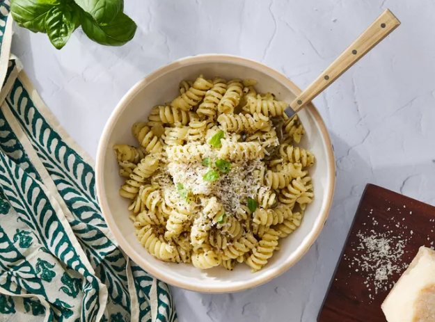
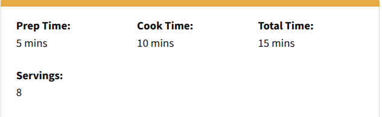
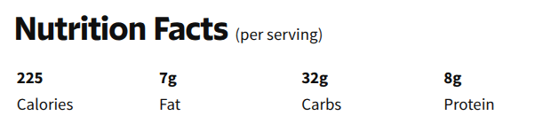

Gather all ingredients.
Step 2.Fill a large pot with lightly salted water and bring to a rolling boil. Stir in pasta and return to a boil. Cook pasta uncovered, stirring occasionally, until tender yet firm to the bite, 8 to 10 minutes. Drain; transfer into a large bowl.
Step 3.Meanwhile, heat oil in a skillet over medium-low heat. Add onion; cook and stir until softened, about 3 minutes.
Step 4.Stir in pesto, salt, and black pepper until warmed through.
Step 5.Stir pesto mixture into hot pasta; stir in grated cheese to coat.
